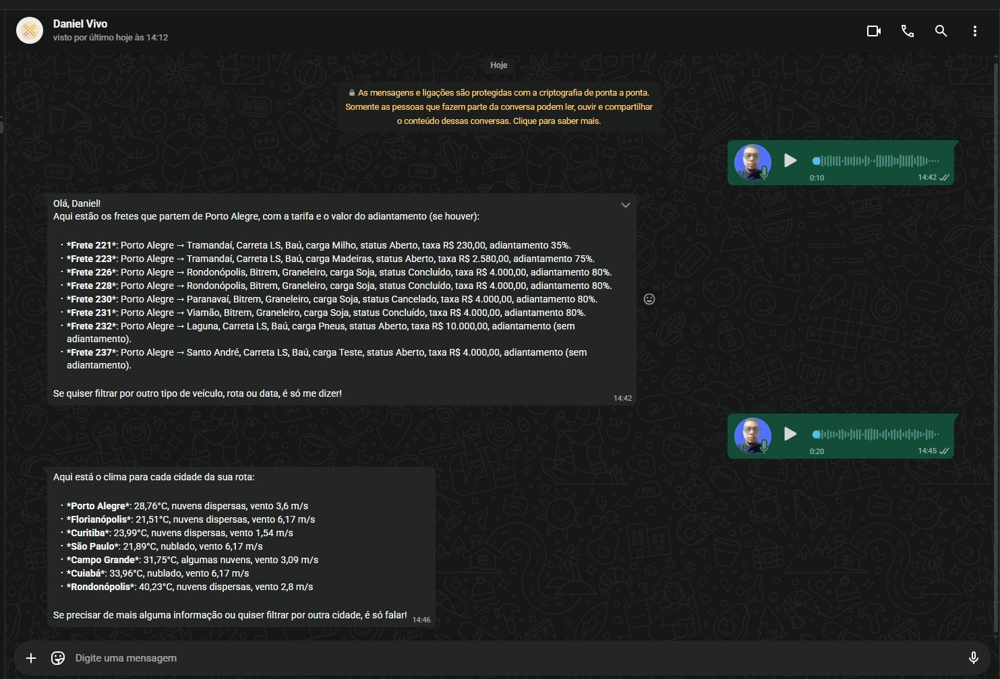

Eu sou
Tech
+ Solutions
Meu nome é DANIEL FERREIRA
Profissional de tecnologia com experiência em suporte técnico, infraestrutura, automação de processos, desenvolvimento de sistemas e integrações hospitalares. Atuo criando soluções para empresas que desejam ganhar produtividade, reduzir falhas operacionais, integrar sistemas críticos e evoluir seu ambiente tecnológico com mais estabilidade, organização e eficiência.
Operação mais estável
Organização de ambientes, correção de falhas, padronização técnica e suporte para manter a empresa funcionando com mais segurança.
Processos mais rápidos
Automação com Python, Shell, n8n, Node-RED e integrações via API para reduzir tarefas manuais e retrabalho operacional.
Integração de sistemas críticos
Experiência com cenários corporativos e de saúde, conectando aplicações, equipamentos e serviços de forma confiável.
Serviços
- Infraestrutura e Suporte Organização de ambientes corporativos, suporte técnico operacional, manutenção de servidores, infraestrutura de redes, ambientes Linux/Windows e padronização de ambientes de TI.
- Automação de Processos Automação com Python, Shell Script, Node-RED e n8n. Integração entre APIs e sistemas corporativos para eliminar tarefas manuais repetitivas e melhorar a eficiência operacional.
- Sistemas e Dashboards Desenvolvimento de sistemas internos, dashboards operacionais e integração de dados utilizando C#, Blazor, bancos SQL e APIs para apoio à tomada de decisão.
- Soluções para Saúde (LIS • RIS • HIS) Implantação, suporte e integração de sistemas hospitalares e laboratoriais, interfaceamento de exames clínicos e de radiologia, comunicação com PACS e organização de fluxos críticos de diagnóstico.
- Integrações DICOM e Equipamentos Conhecimento em integração de exames radiológicos com imagens DICOM, equipamentos de análises clínicas e equipamentos radiológicos conectados a servidores e serviços de interface.
Experiência
- WNS Log — Desenvolvedor Front-End Desenvolvimento de interfaces com Blazor Server e Radzen, integração com APIs, validações de formulários, refatoração de código, otimização de usabilidade e colaboração com equipes de backend e UX/UI.
- Cogna Educação — Técnico de TI Suporte técnico em ambiente corporativo, manutenção de computadores, gestão de infraestrutura de redes, configuração de switches e cabeamento estruturado, garantindo estabilidade dos laboratórios e sistemas do campus.
- VFR Sistemas — Preparador de Dados Implantação de drivers para equipamentos laboratoriais em servidores Linux, automação de tarefas com Python e Shell Script, administração de bancos SQL, suporte a incidentes críticos e configuração de ambientes Docker.
- Optix One — Suporte Técnico Atendimento a clientes por plataforma de chamados, virtualização de servidores, configuração de equipamentos médicos, envio DICOM para PACS, manutenção de servidores Linux e atuação em ambientes de saúde.
- eHost Team — Desenvolvimento e Operação Gestão operacional de equipe, acompanhamento de entregas, suporte ao uso da ferramenta interna e sustentação de serviços digitais voltados ao atendimento e marketing via WhatsApp.
Serviços Profissionais
Infraestrutura & DevOps
Implantação e organização de ambientes com Docker, Linux, redes e servidores. Estruturação de stacks estáveis e melhoria da operação técnica.
Automação de Processos
Criação de automações com Python, Shell, Node-RED, n8n e integrações entre APIs para reduzir retrabalho e acelerar rotinas operacionais.
Desenvolvimento de Sistemas
Sistemas internos, páginas web, dashboards e integrações com C#, Blazor, APIs e banco de dados para apoiar operações empresariais.
Automação com IA
Fluxos inteligentes, assistentes integrados e soluções orientadas a produtividade para atendimento, suporte e análise de informação.
Integrações para Saúde
Atuação com LIS, RIS, HIS, PACS, DICOM e interfaceamento de exames clínicos e radiológicos, além de integração de equipamentos com servidores de interface.

Agentes de IA Conversacionais para Logística no WhatsApp
Desenvolvi um sistema de agentes de IA conversacionais para WhatsApp integrado aos processos operacionais de logística.
A solução interpreta mensagens em linguagem natural (texto e áudio), consulta fretes reais em banco de dados,
fornece informações de rota e clima via APIs externas e responde automaticamente aos motoristas e transportadoras
de forma contextualizada.
A arquitetura foi construída com n8n para orquestração de workflows, Groq para interpretação de linguagem natural, PostgreSQL para persistência de dados, Redis para cache e filas, Evolution API para integração com WhatsApp e Docker para padronização e escalabilidade da infraestrutura.
O sistema reduz o tempo de atendimento, diminui erros operacionais e permite automatizar interações logísticas diretamente no WhatsApp, mantendo uma experiência rápida e profissional para motoristas e parceiros.
A arquitetura foi construída com n8n para orquestração de workflows, Groq para interpretação de linguagem natural, PostgreSQL para persistência de dados, Redis para cache e filas, Evolution API para integração com WhatsApp e Docker para padronização e escalabilidade da infraestrutura.
O sistema reduz o tempo de atendimento, diminui erros operacionais e permite automatizar interações logísticas diretamente no WhatsApp, mantendo uma experiência rápida e profissional para motoristas e parceiros.
Vamos conversar
Precisa organizar sua operação, automatizar processos ou integrar sistemas críticos?
Posso apoiar sua empresa em demandas de suporte, infraestrutura, automação, desenvolvimento e integração técnica. Meu foco é entregar soluções práticas, estáveis e úteis para o dia a dia da operação.